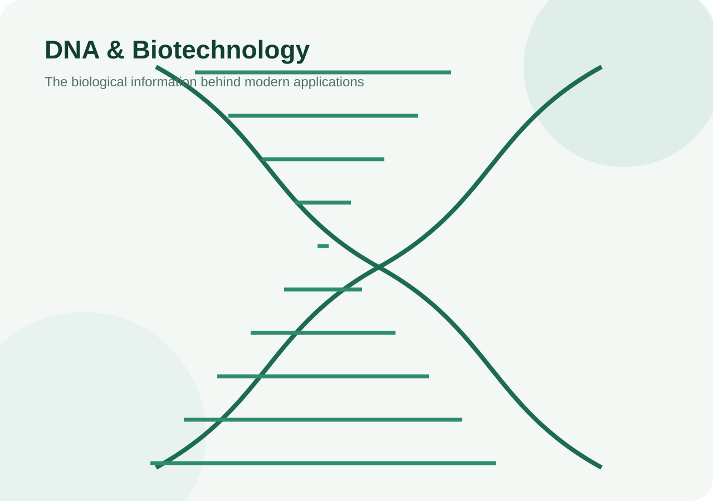

Critical Thinking
Myths vs Facts
Challenge common misconceptions about cloning, GM foods, CRISPR and biotechnology using evidence and careful reasoning.
Biotechnology is broad. A claim about one application should not automatically be applied to every biotechnology product or technique.
A clone can share almost all nuclear DNA with its donor, but mitochondrial DNA, mutations and environment can contribute to differences.
Genes interact with development and environment. Roslin notes that clones can differ in characteristics despite sharing the same nuclear genetic information.
Safety assessment is product-specific. The trait, organism, exposure and environmental context matter.
Good evaluation asks what was changed, what the product is, what evidence exists and what risks were actually assessed.
Gene editing is powerful but technically constrained. Target selection, delivery, off-target effects and biological context matter.
Responsible use includes biosafety, ethics, risk assessment, oversight and clear communication.
